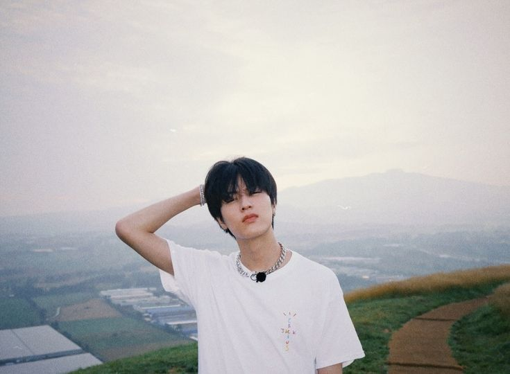

Watanabe Haruto
Main Rapper & Visual • TREASURE2020
Tahun Debut
YG
Entertainment
Bass
Vocal Tone
Profil Singkat
Watanabe Haruto (渡辺温斗) adalah rapper dan penulis lagu bertalenta asal Jepang di bawah naungan agensi YG Entertainment.
Dikenal memiliki karakter suara low-tone rap yang dalam serta visual yang karismatik, Haruto sukses memikat jutaan penggemar global sebagai salah satu ikon utama dari boy group generasi ke-4, TREASURE.